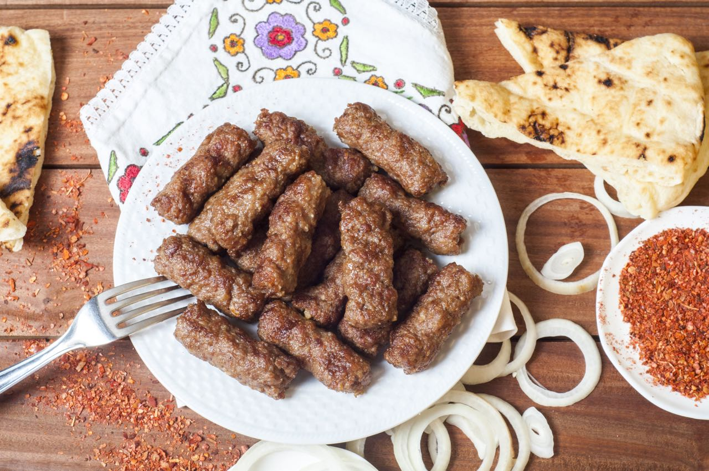

Byrek

A pastry stuffed with meat, spinach, or cheese, the byrek is an all-time favorite meal. Some versions include rice along with minced meat, making it a perfect all-in-one meal. The bureks in Kosovo are usually made in circular pans by alternating layers of flaky pastry with the fillings.
Flija

When you eat a Flija, you wonder how a simple alternating batter and cream dish can taste so good. But if you get the chance to watch it being made, you’ll be awed at the amount of work this simple Kosovo food takes. Alternating layers of batter and cream are filled into a pan and baked one layer at a time over 5 to 6 hours.
Cevapi
Cevapcici or Cevapi is a type of skinless sausage made of minced beef, pork, or lamb meat. They are grilled and served with onions and sour cream.
Ajvar or Hajvar
Whether hot or mild, red peppers are pickled to form a relish in autumn and can be eaten throughout the year.
Stuffed Peppers
Peppers are often stuffed with meat, vegetables, and rice. Some are also loaded with kefir and cottage cheese.
Bread in Kosovo
Somun: A pita bread is the most common bread in Kosovo. It’s often eaten for breakfast as well and is served with eggs and sausages baked right on it.
Sarma
You can’t leave Pristina without trying the sarma. They look like adorable cocoons but are really a mixture of minced meat, veggies, and rice rolled in cabbage leaves or vine leaves.
Wine
You can’t leave Kosovo without tasting Vranac. This red wine is made from Kosovo’s Rahovec region, located southwest of the capital Pristina. The Balkan grapes used for Vranac are some of the oldest in the world. Several home breweries sell other local wines.
Beer
Beer is brewed at a few local breweries in Kosovo and takes the name of the cities they’re made in. For example, Birra Prishtina from Pristina, Birra Peja made in Pec, Birra Ereniku made near the Erenik river region.
Rakia
.jpg)
Rakia is a homemade liquor made across the Balkan region, and every town or country makes it differently. Kosovo’s rakia is usually made from grapes, walnuts, quince, and other local fruits and is exceptionally strong to taste.
Rasoj
.jpg)
A juice of fermented red cabbage that’s popular in winter.
Golden Eagle
.jpg)
Golden Eagle Energy Drink is made of water and sugar with various vital nutrients like vitamin B-complex, natural caffeine, and carbonic acid. It will boost your energy and stimulate the rate of metabolism.